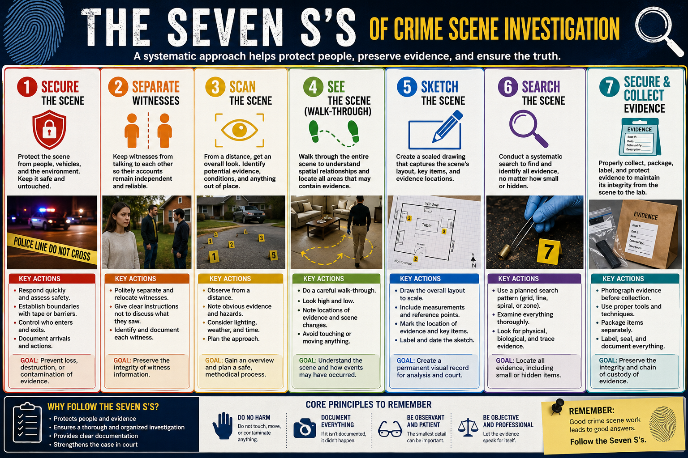

Crime Scene Investigation and Evidence Collection¶
Summary¶
This chapter covers the systematic protocols that govern how crime scenes are secured, documented, searched, and processed. Students learn the Seven S's methodology as an organizing framework, then work through each stage: establishing perimeter security, creating photographic and sketched documentation, applying structured search patterns, and collecting and packaging evidence according to proper chain-of-custody standards. The procedural knowledge built here underpins every subsequent chapter — nearly all physical evidence in the course is governed by these collection and documentation rules.
Learning Objectives¶
By the end of this chapter, investigators will be able to:
- List the Seven S's of Crime Scene Investigation in correct procedural order.
- Distinguish between primary and secondary crime scenes and explain how each is processed differently.
- Apply triangulation measurement to produce a scaled crime scene sketch.
- Select the appropriate search pattern given the terrain, personnel available, and evidence type.
- Demonstrate proper evidence collection and packaging procedures, including chain-of-custody documentation.
Concepts Covered¶
This chapter covers the following 20 concepts from the learning graph:
- Chain of Custody
- Seven S's of Crime Scene
- Crime Scene Perimeter Security
- Primary vs Secondary Scenes
- Crime Scene Documentation
- Crime Scene Photography
- Crime Scene Sketching
- Scaled Sketch Techniques
- Triangulation Measurement
- Evidence Search Patterns
- Grid Search Pattern
- Spiral Search Pattern
- Zone Search Pattern
- Evidence Identification
- Evidence Collection Protocols
- Evidence Packaging Materials
- Druggist Fold Technique
- Biohazard Evidence Containers
- Physical Evidence Types
- Trace Evidence
Prerequisites¶
This chapter builds on concepts from:
Welcome, Investigators!
 Every case starts the same way: someone calls 911, and the clock starts ticking. Before a single test gets run in any laboratory, the crime scene itself must be secured, documented, and processed. This chapter is the foundation of everything else — if the scene is contaminated, the chain of custody is broken, or evidence is packaged wrong, no amount of laboratory science can fix it. Follow the evidence — and start by protecting it.
Every case starts the same way: someone calls 911, and the clock starts ticking. Before a single test gets run in any laboratory, the crime scene itself must be secured, documented, and processed. This chapter is the foundation of everything else — if the scene is contaminated, the chain of custody is broken, or evidence is packaged wrong, no amount of laboratory science can fix it. Follow the evidence — and start by protecting it.
The Scene Is Evidence: Why Procedure Matters¶
Imagine arriving at a burglary scene only to find that the first officer through the door walked across the broken glass, moved the victim's belongings aside, and picked up the pry bar with bare hands. In one careless minute, critical trace evidence — shoe impressions, fingerprints, fiber transfers — was destroyed or contaminated. This scenario is not hypothetical; it happens, and it is why every forensic investigator follows a strict, documented protocol.
A crime scene is any location where physical evidence related to a criminal event may be found. That definition is deliberately broad. The location where the primary crime occurred is called the primary scene, while any additional locations connected to the same event — a suspect's vehicle, a disposal site, a victim's residence — are secondary scenes. Primary scenes receive the most intensive processing, but secondary scenes can yield critical corroborating evidence and must be secured just as carefully.
Before any evidence can be collected, it must be protected. Crime scene perimeter security means physically separating the scene from bystanders, uninvolved officers, and media using crime scene tape, barriers, or natural boundaries. The initial perimeter should always be set larger than the investigator believes necessary — it is easy to shrink a perimeter once the true scene boundary is understood, but impossible to un-contaminate an area that was trampled before the tape went up.
A scene log — a written record of every person who enters and exits the perimeter, with time stamps — is started the moment the perimeter is established. This log becomes part of the case file and is subject to discovery in court. Any person who entered the scene, even briefly, may become a witness at trial.
The Seven S's of Crime Scene Investigation¶

The field has developed a memorable framework that organizes first-responder and investigative team actions into a logical sequence. The Seven S's, in procedural order, are:
- Secure the scene
- Separate witnesses
- Scan the scene
- See the scene (walk-through)
- Sketch the scene
- Search the scene
- Secure and collect evidence
Notice that "secure" appears twice — at the beginning (establish the perimeter) and at the end (secure the collected evidence through packaging and chain of custody). This repetition is intentional: an unsecured scene at either end of the investigation can destroy a case.
What Does the Data Tell Us?
 Why separate witnesses before scanning the scene? Because human memory is not a recording — it is a reconstruction. Witnesses who talk to each other before giving statements inadvertently merge their memories. Keeping them apart preserves each person's independent recollection as a separate data source. Contaminated memory, like contaminated evidence, cannot be uncontaminated.
Why separate witnesses before scanning the scene? Because human memory is not a recording — it is a reconstruction. Witnesses who talk to each other before giving statements inadvertently merge their memories. Keeping them apart preserves each person's independent recollection as a separate data source. Contaminated memory, like contaminated evidence, cannot be uncontaminated.
Step 1: Secure the Scene¶
The first officer on scene — almost always a patrol officer, not a forensic specialist — has one job: stop the contamination clock. This means establishing a perimeter using tape or rope, redirecting bystanders, and preventing unauthorized entry. If the victim requires medical attention, paramedics must enter, but an officer should shadow them and document exactly where they walked and what they touched. The rule of thumb: the cost of a perimeter that is too large is inconvenience; the cost of a perimeter that is too small is lost evidence.
Step 2: Separate Witnesses¶
Witnesses are moved to separate locations — separate rooms, separate patrol cars, separate areas outside the perimeter — before they can compare accounts. Their initial, uncontaminated statements are among the most valuable pieces of investigative information. A witness who has spoken with three others is no longer giving their own recollection; they are giving a composite account shaped by those conversations.
Step 3: Scan the Scene¶
The scan is a deliberate, broad visual survey of the entire scene before anyone steps inside the perimeter. Investigators walk the perimeter's edge and look inward, building a mental map and identifying areas of obvious evidence concentration. Aerial drone photography, if available, captures this overview from above. The scan answers one key question: Where should we focus, and where should we be most cautious about where we step?
Step 4: See the Scene (Walk-Through)¶
The lead investigator and the crime scene technician conduct a walk-through together, following a pre-planned path that avoids disturbing evidence. The walk-through has three goals: build a comprehensive mental model of the scene's layout; identify all visible evidence items before photography begins; and plan the documentation and search strategy. Notes taken during the walk-through include approximate evidence locations, environmental conditions (lighting, temperature, weather), and observations about access points and exit routes.
Step 5: Sketch the Scene¶
Before any evidence is moved, the scene must be drawn to scale with accurate measurements. Photographs alone are insufficient because they distort spatial relationships and lack measurement data. Sketching is covered in depth in the next section.
Step 6: Search the Scene¶
The systematic evidence search follows a planned pattern matched to the size and shape of the scene. Search patterns are covered in their own section below.
Step 7: Secure and Collect Evidence¶
Every item of evidence collected receives a unique identifier, is documented in place with photographs and on the sketch, and is packaged according to its evidence type. Chain-of-custody forms are initiated at the moment of collection.
Documenting the Scene: Photography and Sketching¶
Crime Scene Photography¶
Photographs are taken in a specific sequence — overview, then mid-range, then close-up — that creates a visual narrative from the broad scene down to individual evidence items.
Overview photographs show the full scene in context: the street, the building, the room. They establish the spatial relationship between the scene and its surroundings and are typically taken from outside the perimeter.
Mid-range photographs show the relationship between evidence items and fixed reference points. These answer the question: Where was the evidence within the scene?
Close-up photographs show individual evidence items in maximum detail. The standard protocol requires two close-up images for every item: one without a scale marker to document the undisturbed state, and one with a metric ruler placed beside the evidence to provide measurement context.
All photographs are logged sequentially with time stamps, camera settings, and the photographer's name. Every photograph becomes potentially subject to courtroom scrutiny.
Crime Scene Sketching¶
A photograph cannot replace a sketch, because photographs introduce perspective distortion — objects closer to the camera appear larger than objects farther away. A sketch, drawn from directly overhead (bird's-eye view), preserves true spatial relationships without distortion.
The rough sketch is drawn at the scene on graph paper and includes all walls, doors, windows, and fixed features; all evidence items labeled with evidence numbers; all measurements; a north arrow; and the case number, investigator name, and date. The rough sketch is later converted into a final sketch — a clean, to-scale drawing produced with drafting software — submitted with the case report.
Scaled Sketch Techniques and Triangulation Measurement¶
Two measurement techniques record evidence positions accurately enough to recreate the scene later.
Baseline measurement places a measuring tape along one wall and records each evidence item's perpendicular distance from that line. This method works well in rectangular rooms.
Triangulation measurement records the distance from each evidence item to two fixed, permanent reference points — typically two corners of a room or two known landmarks outdoors. Because a point in two-dimensional space is uniquely determined by its distances to two known points, any evidence item can be precisely plotted later. Triangulation is especially useful outdoors or in irregularly shaped spaces.
Before the diagram below, two terms need definition. A reference point is a fixed, permanent landmark whose position is independently verifiable — a wall corner, a door frame, a utility pole. A measured distance is the straight-line distance from the evidence item to that reference point, recorded to the nearest centimeter.
Diagram: Triangulation Measurement Technique¶
Triangulation Measurement Technique Interactive MicroSim
Type: microsim
sim-id: triangulation-measurement
Library: p5.js
Status: Specified
Learning Objective: Apply triangulation measurement to record evidence position on a scaled sketch (Bloom Level 3 — Apply; verb: calculate).
Bloom Level: Apply (L3) Bloom Verb: Calculate
Canvas layout: - Main drawing area (left ~75%): overhead view of a room - Control panel (right ~25%): input fields, instructions, measurement log
Visual elements: - A rectangular room floor plan viewed from above - Two labeled reference points (A and B) at two corners, shown as green circles - A draggable orange dot representing an evidence item - Two dashed lines from the evidence item to reference points A and B - Live distance measurements displayed along the dashed lines in centimeters - A readout showing the calculated (x, y) coordinates of the evidence item
Interactive controls: - Drag the evidence item anywhere within the room - Sliders to adjust room length and width (3m to 10m) - A "Record Measurement" button that appends current distances to a measurement log list - A "Clear Log" button
Data Visibility Requirements: - Stage 1: Show room with two fixed reference corners (A, B) and a default evidence item position - Stage 2: As user drags the evidence item, live-update distances to A and B - Stage 3: When "Record Measurement" is clicked, append a row to a log showing: Evidence Item #, Distance to A (cm), Distance to B (cm)
Default parameters: - Room: 6m × 5m - Evidence item starting position: roughly center of room - Reference point A: upper-left corner - Reference point B: upper-right corner
Behavior: - Distances update in real time as the evidence item is dragged - Log panel demonstrates how multiple evidence items are recorded on a sketch sheet - Simulation recalculates positions accurately using the Pythagorean theorem
Instructional Rationale: An Apply-level objective (calculate triangulation distances) requires the learner to perform the operation themselves. A draggable evidence item with live distance feedback gives immediate confirmation of whether the student understands what is being measured.
Color scheme: Light gray room background, green reference points, orange evidence dot, blue dashed measurement lines.
Evidence Search Patterns¶
After documentation is complete, the scene is searched systematically. The choice of search pattern depends on the size and shape of the area, the number of searchers available, and whether the scene is indoors or outdoors. Two foundational principles apply to all searches: every searcher must understand what they are looking for, because unrecognized evidence gets stepped on; and no searcher moves to the next area until their current area is fully cleared.
Grid Search Pattern¶
The grid search overlays two parallel sweeps at 90-degree angles to each other. Searchers first sweep the scene in east-west rows, then sweep the same area in north-south columns. This double coverage means every point is checked at least twice from different angles, making it the most thorough pattern available. The grid search is best for high-priority outdoor scenes with multiple searchers when completeness matters more than speed.
Spiral Search Pattern¶
The spiral search begins at the center and radiates outward in ever-widening concentric circles, or begins at the outer boundary and spirals inward. An inward spiral is preferred when the center contains the most concentrated evidence (a body, a point of entry) because it forces searchers to approach the highest-priority area last, after all surrounding evidence is documented. A spiral is best performed by a single searcher or a small team in a compact area.
Zone Search Pattern¶
In a zone search, the scene is divided into clearly marked sectors, and a designated team is assigned to each zone. Each team searches its zone completely before reporting results. The zone pattern scales well to large scenes because it deploys multiple teams simultaneously. It is the standard choice for outdoor scenes covering more than roughly 200 square meters, and it is effective when specialists are assigned to the zones where their expertise matters most.
Diagram: Evidence Search Pattern Selector¶
Evidence Search Pattern Selector MicroSim
Type: microsim
sim-id: search-pattern-selector
Library: p5.js
Status: Specified
Learning Objective: Select the appropriate search pattern for a given scene description (Bloom Level 3 — Apply; verb: select).
Bloom Level: Apply (L3) Bloom Verb: Select
Canvas layout: - Scene display area (left ~70%): overhead grid representing the scene - Control panel (right ~30%): pattern selection, scene parameters, animated searcher dots
Visual elements: - A grid representing a top-down scene view (outdoor field, interior room) - Animated dots representing searchers moving through the scene using the selected pattern - Color-coded cells: unsearched (light gray), currently being searched (yellow), searched (green) - A summary panel showing the pattern's best-use conditions
Interactive controls: - Dropdown: Select pattern (Grid, Spiral Inward, Spiral Outward, Zone) - Slider: Number of searchers (1–6) - Dropdown: Scene type (indoor room, outdoor field, large outdoor area) - Button: "Start Search" / "Pause" / "Reset" - Animation speed slider
Default parameters: - Pattern: Grid - Searchers: 2 - Scene: outdoor field (20×20 grid)
Behavior: - "Start Search" animates searcher dots moving through the selected pattern - At completion, a summary shows total cells searched, animation steps elapsed, and a pattern efficiency rating - If the user selects more searchers than the pattern supports efficiently, a warning tooltip appears - Clicking a grid cell reveals the type of evidence that might be found there (randomly assigned from a list: fiber, footwear impression, latent print, etc.)
Instructional Rationale: An Apply-level objective (select and use a search pattern) requires the learner to experiment with the variables that govern pattern selection — scene size, team size, pattern type — and observe the consequences. Animation with coverage feedback makes the trade-offs visible rather than abstract.
Color scheme: Gray unsearched, yellow active, green cleared. If "contamination mode" is toggled on, cells a searcher skips appear red.
Investigator Tip
 Always search parallel to the light source when processing outdoors — low-angle raking light reveals shoe impressions, tire tracks, and fine trace deposits that flat overhead light completely hides. Good forensic work is as much about light management as it is about chemistry.
Always search parallel to the light source when processing outdoors — low-angle raking light reveals shoe impressions, tire tracks, and fine trace deposits that flat overhead light completely hides. Good forensic work is as much about light management as it is about chemistry.
Evidence Identification and Physical Evidence Types¶
Before collection can begin, the investigator must recognize that something is potentially relevant to the case and flag it for documentation. This requires both training and scene-specific knowledge: a forensic investigator who does not recognize a bloodstain pattern will document a red stain as paint.
Physical evidence falls into several broad categories. Understanding these categories helps the investigator anticipate what collection method and packaging material are needed.
The main physical evidence categories are:
- Biological evidence — blood, hair, saliva, semen, skin cells, plant material
- Trace evidence — microscopic or near-microscopic material transferred by contact (fibers, glass fragments, paint chips, gunshot residue, soil)
- Impression evidence — fingerprints, footwear impressions, tire tracks, tool marks
- Digital evidence — phones, computers, surveillance footage, metadata
- Documentary evidence — handwritten notes, printed records, forged documents
- Firearms evidence — weapons, cartridge cases, bullets, gunshot residue
Trace evidence deserves special attention because it is the category most easily overlooked and most easily destroyed by contamination. Trace evidence is the physical embodiment of Locard's Exchange Principle from Chapter 1: when two objects make contact, microscopic materials transfer between them. A suspect's carpet fiber on the victim's clothing and the victim's paint chip on the suspect's shoe are both trace evidence — both invisible to the unaided eye, and both requiring specialized collection techniques.
Evidence Collection Protocols¶
The cardinal rule of evidence collection is document before you disturb. Every item must be photographed in place, included on the sketch, and assigned an evidence number before anyone touches it. Only after documentation is complete does collection begin.
Collection tools and techniques vary by evidence type:
- Swabs are used for biological fluids, using sterile cotton-tipped applicators
- Forceps or tweezers (never bare hands) are used for fibers, glass, and small physical items
- Casting materials (dental stone) capture three-dimensional shoe and tire impressions
- Tape lifts collect surface trace evidence and loose fibers
- Paper folds (the druggist fold technique) preserve loose trace items
- Gloves and face masks are mandatory to prevent DNA and fiber contamination from the collector
Each item is collected into a separate container labeled with the case number, evidence item number, date, collection location, and the name of the collecting officer. Never combine two pieces of evidence in the same container.
Common Mistake
 Wet biological evidence (blood, saliva) placed in a plastic bag will grow mold within 24–48 hours, destroying the DNA. Always place wet biological evidence in paper packaging first, allowing it to air-dry before any long-term storage. Plastic is airtight; paper breathes. This is one of the most common packaging errors at crime scenes — and one of the most damaging.
Wet biological evidence (blood, saliva) placed in a plastic bag will grow mold within 24–48 hours, destroying the DNA. Always place wet biological evidence in paper packaging first, allowing it to air-dry before any long-term storage. Plastic is airtight; paper breathes. This is one of the most common packaging errors at crime scenes — and one of the most damaging.
Evidence Packaging Materials and Techniques¶
The packaging material must match the evidence type. Using the wrong container is not a technicality — it can render evidence inadmissible or completely destroy its forensic value.
The following table summarizes the key evidence types and their correct packaging:
| Evidence Type | Correct Packaging | Reason |
|---|---|---|
| Wet biological (blood, saliva) | Paper bag or envelope | Allows moisture to escape; prevents mold |
| Dried biological | Paper bag or envelope | Prevents rehydration and contamination |
| Trace evidence (dry fibers, glass) | Paper bindle (druggist fold) inside envelope | Contains loose particles without loss |
| Sharp objects (knives, needles) | Rigid container (cardboard box or tube) | Safety; prevents bag puncture |
| Firearms | Pistol box or rigid firearms case | Safety; prevents accidental discharge |
| Biohazardous evidence | Orange or red biohazard container | Legal requirement; protects handlers |
| Digital devices | Antistatic / Faraday bags | Prevents static damage and remote wipe |
| Impression casts | Rigid box with padding | Prevents breakage |
The Druggist Fold Technique¶
The druggist fold (also called a pharmaceutical fold or bindle) is the standard technique for packaging loose trace evidence — fibers, glass fragments, soil, hair — that would otherwise shift inside an envelope and be lost or contaminated.
A clean sheet of paper (typically glassine or acid-free paper) is placed on a clean surface. The trace evidence is deposited in the center. The paper is then folded in four steps:
- Fold the bottom third up
- Fold the top third down, overlapping the first fold
- Fold the left third to the right
- Fold the right third to the left, creating a secure, self-sealing packet
This packet is then placed inside a labeled evidence envelope. The multiple folds create a series of barriers that prevent fine particles from escaping through any single opening.
Biohazard Evidence Containers¶
Any evidence containing or suspected to contain blood, other bodily fluids, or potentially infectious biological material must be packaged in orange or red containers bearing the universal biohazard symbol. This classification is a legal requirement under OSHA's Bloodborne Pathogens Standard (29 CFR 1910.1030) and protects laboratory technicians, evidence custodians, and anyone else who handles the evidence downstream.
Diagram: Evidence Packaging Decision Guide¶
Evidence Packaging Decision Guide Interactive Infographic
Type: infographic
sim-id: evidence-packaging-guide
Library: p5.js
Status: Specified
Learning Objective: Select the correct packaging material for a given evidence type (Bloom Level 3 — Apply; verb: select).
Bloom Level: Apply (L3) Bloom Verb: Select
Purpose: Walk investigators through a decision interface for evidence packaging selection.
Layout: - Left column: clickable list of evidence categories (biological wet, biological dry, trace/dry, sharp, firearm, digital, biohazard, impression) - Right panel: when a category is selected, the panel shows: (1) correct packaging image/icon, (2) reason in one sentence, (3) common mistake to avoid
Visual elements: - Illustrated icons for each packaging material (paper bag, biohazard container, rigid box, faraday bag, druggist fold sequence) - Color-coded by evidence module: red = biological, orange = biohazard, blue = trace, gray = digital - A "Druggist Fold Tutorial" button that launches a 4-step animated fold sequence
Interactive controls: - Click on an evidence category to load the right-panel explanation - "Druggist Fold Tutorial" shows the four fold steps with a "Next Step" button - Hover over any packaging icon to see its name and a one-line description
Data Visibility Requirements: - When user selects "Wet Biological": show paper bag, display "Wet blood in plastic → mold in 24h → DNA destroyed" - When user selects "Trace Dry": show druggist fold steps with actual fold angles - For each selection, show a "Courtroom Risk" line summarizing the consequence of using wrong packaging
Instructional Rationale: An Apply-level objective (select packaging) is best served by a decision interface where the learner actively chooses and receives immediate, specific feedback — including the consequence of a wrong choice.
Color scheme: Each evidence category has a distinct accent color; background is neutral white with subtle gray panels.
Chain of Custody¶
Every piece of physical evidence travels from the crime scene through a laboratory to the courtroom. The chain of custody is the documented, chronological record of every person who had possession of that evidence — and when, why, and where the transfer occurred. An unbroken chain of custody is not merely good practice; it is a legal requirement for evidence admissibility.
A chain-of-custody form is initiated the moment an item is collected from the scene. It records:
- Item identifier — the unique evidence number assigned at the scene
- Description — what the item is and its condition at collection
- Collector name and badge/employee number
- Date and time of collection
- Collection location — the exact address and location within the scene
- Each subsequent transfer — who received the item, date and time, and purpose (transport to lab, lab analysis, storage, court)
Every time the evidence changes hands — from the collecting officer to the evidence custodian, from the custodian to the laboratory analyst, from the analyst back to the custodian — both parties sign and date the form. The chain is continuous; there must be no gaps.
Why does a gap in the chain matter? Defense attorneys challenge evidence authenticity by arguing that an unaccounted period represents an opportunity for contamination, substitution, or tampering. A judge who cannot verify that the evidence presented in court is the same item collected at the scene may exclude it entirely. The chain of custody is the legal immune system of physical evidence.
Diagram: Chain of Custody Flow¶
Chain of Custody Flow Interactive Diagram
Type: workflow
sim-id: chain-of-custody-flow
Library: p5.js
Status: Specified
Learning Objective: Trace the chain of custody for an evidence item from collection to court and identify required documentation at each transfer (Bloom Level 2 — Understand; verb: explain).
Bloom Level: Understand (L2) Bloom Verb: Explain
Purpose: Visualize the flow of physical evidence from crime scene collection through laboratory analysis to courtroom presentation.
Visual layout: - Horizontal workflow with six labeled stations: 1. Crime Scene (collection officer) 2. Evidence Packaging and Labeling 3. Scene Supervisor / Lead Investigator 4. Evidence Custodian (evidence room) 5. Laboratory Analyst 6. Courtroom (prosecutor / evidence clerk) - Arrows connecting stations with labels showing what is signed at each transfer
Interactive elements: - Click any station to open an info panel showing: (1) who is responsible, (2) what documentation is completed, (3) what happens if this step is skipped - A "Break the Chain" mode lets students click to remove a signature at any step and see a red "INADMISSIBLE" warning appear over the evidence path - Hover over arrows to see the form fields required at that transfer
Data Visibility Requirements: - Each station shows specific form fields (item ID, date, signature, condition notes) - The "Break the Chain" simulation highlights which step was broken and explains why that break matters legally
Steps with hover detail: 1. Crime Scene: "Officer collects item, assigns evidence number, photographs in place." 2. Packaging: "Evidence packaged per type, labeled, sealed with evidence tape." 3. Supervisor Review: "Lead investigator verifies documentation before transport." 4. Evidence Room: "Custodian logs item into property management system; item placed in secure storage." 5. Laboratory: "Analyst signs out item, performs tests, documents results, returns item sealed." 6. Court: "Prosecutor or clerk signs item into court exhibit log; item presented with full documentation."
Color scheme: Blue for active investigators, green for intact chain, red for broken chain / inadmissible warning, gray for storage.
Instructional Rationale: A step-through workflow with "break the chain" interactivity lets students explore consequences rather than memorize rules, which is appropriate for an Understand-level objective.
You've Got This, Investigator
 Chain-of-custody paperwork feels tedious — until you are on the witness stand and a defense attorney asks you to account for every minute that evidence was outside the evidence room. Investigators who do the paperwork precisely at the scene never have to scramble to answer that question. Build the habit now.
Chain-of-custody paperwork feels tedious — until you are on the witness stand and a defense attorney asks you to account for every minute that evidence was outside the evidence room. Investigators who do the paperwork precisely at the scene never have to scramble to answer that question. Build the habit now.
Putting It All Together: Scene to Lab¶
The Seven S's, documentation protocols, search patterns, packaging rules, and chain-of-custody forms are not separate topics — they are a single continuous workflow. A break anywhere in that workflow, from the moment the first officer arrives to the moment the evidence is logged into the evidence room, can unravel weeks of laboratory work.
Real forensic cases turn on procedural integrity. The first criminal conviction using DNA evidence (Colin Pitchfork, 1986) succeeded not because DNA was magic, but because every step from crime scene to court was documented and defensible. Conversely, the 1995 O.J. Simpson trial became a case study in what happens when chain-of-custody gaps allow defense attorneys to question the integrity of biological evidence.
The practical takeaway for investigators in training: the paperwork is the science. Laboratory results are only as reliable as the evidence collection behind them.
Key Concepts Review¶
The following table summarizes the major concepts from this chapter:
| Concept | Definition |
|---|---|
| Chain of Custody | Documented record of everyone who handled evidence, from collection to court |
| Primary Scene | Location where the main criminal act occurred |
| Secondary Scene | Connected location (vehicle, disposal site) processed for corroborating evidence |
| Seven S's | Secure, Separate, Scan, See, Sketch, Search, Secure (collect) |
| Triangulation | Locating evidence by measuring distances to two fixed reference points |
| Grid Search | Double-sweep pattern; most thorough; best for high-priority outdoor scenes |
| Druggist Fold | Paper-folding technique for packaging loose trace evidence |
| Trace Evidence | Microscopic transfer material; physical embodiment of Locard's Exchange Principle |
Challenge: What Went Wrong?
A detective collects a blood-soaked garment from a victim's bedroom, seals it in a clear plastic bag, and delivers it to the lab four days later. The analyst opens the bag and finds extensive mold growth on the fabric. She runs a DNA test anyway, but the profile is too degraded to use.
Identify all errors in this scenario and explain which step of the Seven S's framework each error violates.
Answer: (1) The garment should have been packaged in a paper bag, not plastic — plastic traps moisture and promotes mold. Paper breathes and allows the fabric to air-dry. This violates Step 7 (Secure and collect evidence correctly). (2) A four-day transport delay is problematic for biological evidence — biological evidence should be delivered to the lab as quickly as practicable. (3) Running a degraded sample wastes laboratory resources and may produce an unreliable result subject to challenge in court.
Case Closed — For Now
 You have just built the procedural foundation that every other chapter in this textbook stands on. Search patterns, packaging, chain of custody, documentation — these are not formalities, they are the difference between a conviction and a mistrial. Every laboratory technique you learn from here on begins with a properly processed crime scene. Follow the evidence — and protect it from the very first second. See you in Chapter 3!
You have just built the procedural foundation that every other chapter in this textbook stands on. Search patterns, packaging, chain of custody, documentation — these are not formalities, they are the difference between a conviction and a mistrial. Every laboratory technique you learn from here on begins with a properly processed crime scene. Follow the evidence — and protect it from the very first second. See you in Chapter 3!